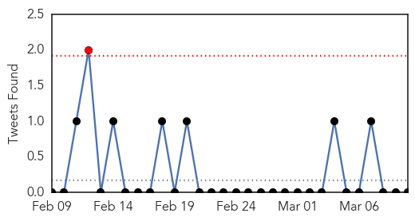
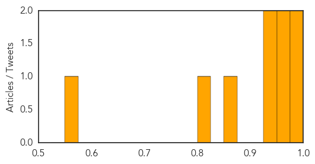
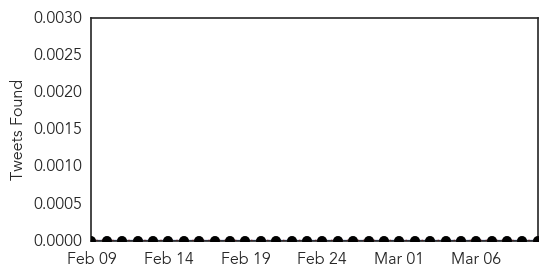

Influenza
30-Day Web Trend
0 alerts, 0 warnings
30-Day Twitter Trend
1 alerts, 0 warnings

Article Locations
Article Confidences
Top Articles:
- 0.996
- Public Health Notice Update: H7N9 avian flu
- 0.979
- Cambodia reports two new bird flu cases, one dies
- 0.964
- Wellington.scoop.co.nz Focus on influenza immunisation at hospital’s high-risk maternity clinic
- 0.952
- Minister launches flu immunisation campaign
- 0.946
- Minister launches flu immunisation campaign
- 0.944
- China bird flu deaths reach 72 this year, says government – BorneoPost Online
- 0.867
- Cambodia reports two new bird flu cases, one fatality
- 0.822
- Boy, 11, dies of avian flu in hospital
- 0.572
- Influenza's Greek Victims List Extends
Top Tweets:
-
No tweets found for Mar 10, 2014
Chikungunya
30-Day Web Trend
2 alerts, 0 warnings
30-Day Twitter Trend
0 alerts, 0 warnings

Article Locations

Article Confidences

Top Articles:
-
No articles found for Mar 10, 2014
Top Tweets:
-
No tweets found for Mar 10, 2014